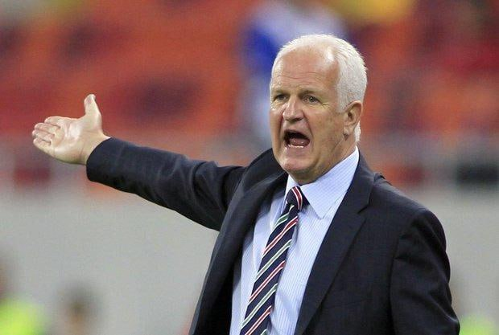

Український футбол, як і Україна, після розпаду Радянського Союзу відчув смак незалежності. Але коли починаєш жити самотужки, тебе прогнозовано очікують певні труднощі. Так сталось і з нашим футболом. Помитися в роздягальнях після матчу було важче, ніж забрати м’яч у Роналдо, бо не було гарячої води, газони нагадували пасовисько, а щоб покосити траву потрібно було йти по ручну косу. Здавалося, що запросити в Україну іноземного фахівця, який чогось досяг у футболі - неможливо. Однак, тільки не тоді, коли ти маєш справу з газом. Дніпро на той час належав компанії Інтергаз та Ігорю Бакаю. Щоб відновити велич дніпровської команди й нав'язати боротьбу між Динамо і Чорноморцем, "завгосп Кучми" (так його називали через тісний зв'язок з другим президентом України) виділив 3 мерседеси серйозним людям і відправив їх до Німеччини по Бернда Штанге.
Коли чорні мерседеси під’їжджали до готелю в Нюрнберзі, щоб забрати тренера, він не намагався втекти через кухню. Знав, що валіза, яку передав Бакай тріщить від грошей, а це його друга любов після футболу. Попри тренерську кар’єру в збірній НДР, німець вдало підробляв «агентом», однак все зіпсувало об’єднання Німеччини. Виявилось, що Штанге 14-ть років співпрацював зі спецслужбами та здавав своїх колег, які хотіли втекти на захід. Близький друг тренера і колишній футболіст Йорг Бергер у розсекречених архівах знайшов їхні розмови з Штанге. «Я вважав його другом і ніколи йому цього не пробачу», - сказав Бергер.
Розсекречення в Німеччині – одна з причин, яка змусила Штанге прийняти пропозицію Дніпра. З приходом німця в роздягальнях на Метеорі з’явилась гаряча вода, а газон побачив сучасну газонокосарку. Також, тренер запровадив систему штрафів у команді. За порушення дисципліни й запізнення на тренування гравець повинен був віддати 1 долар зі свого гаманця. Потім Штанге витрачав ці гроші на подарунки команді.
У квітні 1995-го року Бернд Штанге став тренером Дніпра. З 11-ти матчів в тому сезоні він виграв 7-и й завоював бронзу. У фіналі кубка України поступився Шахтарю у серії пенальті. Німець досі з болем згадує цей день: «Я був дуже сильно розчарований нашою поразкою. У той час ми були кращою командою, але програли в серії пенальті – 6:7. Мені досі боляче це згадувати – моє серце було розбите. Не можу навіть подивитися цей матч на Ютубі».

Пенальті, який перекреслив шанси Дніпра на перемогу у фіналі, не реалізував Борис Фінкель. Це був його останній матч у футболці дніпрян. Згодом нападник зізнався, що Штанге після матчу сказав, що не може залишити того в команді й нападник повинен піти.
Завданням Дніпра на сезон 1995/1996 було виграти чемпіонат України, випередивши Динамо і Чорноморець. Щоб наблизити мрію до реальності, взимку 1996 року було прийняте рішення летіти на закордонні збори. Так Дніпро став першою українською командою, яка покинула країну задля підготовки до матчів чемпіонату. Першу частину зборів дніпряни провели в Саудівській Аравії, а другу – в сонячній Бразилії.
«Ми навіть поїхали з Дніпром в Бразилію, де зіграли проти олімпійської збірної Бразилії, Матч пройшов на новому стадіоні, подивитися гру прийшли 40 тисяч глядачів, а єдиний мʼяч забив Савіо. Хоч ми і програли, але гравці були дуже раді поїхати в Бразилію. Також ми зіграли фантастичний матч проти чемпіона Бразилії Атлетіко Паранаенсе. Програли - 3:5. Це була частина підготовки, щоб зробити «Дніпро» топ-командою. Нам не потрібно було самим на це витрачатися. Допомогли мої міжнародні контакти. Олімпійська збірна Бразилії потребувала суперника. Федерація футболу Бразилії добре заробила на продажі квитків і прав на телетрансляцію. Тому вони оплатили нам квитки на літак і розміщення», - згадував в інтерв’ю Ірині Козюпі.
Зі зборів Дніпро повернувся з підсиленням. Дніпряни ще задовго до Шахтаря привезли в чемпіонат України першого бразильця, однак тут його чекали морози. Луїс Емерсон, якого в Дніпрі називали «мерседес», напевно, на честь машин Бакая, впав у депресію через надмірний холод, до якого не звик в Бразилії. Але коли трішки потепліло, Емерсон у 14-ти матчах забив 7 голів. Також, Штанге запросив в Дніпро першого іноземця, який не був громадянином пострадянських країн - Андреаса
Зассена, але потім шкодував про своє рішення: «Цей німецький хлопець – моя велика помилка. Він грав у Бундеслізі за Гамбург. Я знав Зассена, бо бачив його матчі, але я не зміг прийняти його проблемний характер. Він не підійшов нашому клубу і не виконував вказівок. Під час тренувального збору в Австрії він зник на два дні й не відвідував тренувань. Я відразу відправив його додому зі словами: «Ти більше ніколи не зіграєш за цю команду».
Попри великі амбіції, Дніпро не зумів досягти поставлених цілей. Чорноморець випередив дніпрян на 10-ть очок і посів 2-ге місце, а між Динамо, яке стало чемпіоном, і Дніпром була прірва в 16-ть залікових пунктів. Бронза не задовільнила верхівку команди, тому вони взялися за новий проєкт. Наступною жертвою Ігоря Бакая став ЦСКА-Борисфен. Щоб далеко не ходити, газовий магнат відправив Штранге і ще 8 гравців з Дніпра у свою нову іграшку. Перед сезоном 1996/1997 ЦСКА-Борисфен поїхав на збори до Австрії, але коли Штанге дізнався, що 8 гравцям, які прийшли разом з ним, не дозволено грати за нову команду, сам пішов у відставку. Команда розпалась, Бакай наївся футболом і більше до нього не повернувся. Штанге запросив футболістів на прощальну вечерю, подарував кожному подарунки й повернувся на Батьківщину.
Після недовгого, але насиченого періоду в Україні німець повернувся до роботи в Карл Цейс, де вже працював головним тренером з 1976-го по 1978-й рік і з 1988-го по 1991-ий. В Німеччині фахівець довго не затримався - всього на рік, після чого полетів до Австралії тренувати Перл Глорі. Згодом почав працювати в збірних, але після національних команд Оману та Іраку повернувся до клубного футболу в кіпрський Аполлон.
Пізніше встиг знову попрацювати в Європі. У 2007-му році прийняв збірну Білорусі, але провалив всі відбіркові цикли в яких команда брала участь і у 2011-му пішов у відставку. По закінченню роботи в Сінгапурі й Сирії Штанге вийшов на пенсію.
Після початку повномасштабної війни в Україні дав інтерв’ю де висловився про те, що відбувається в нашій країні: «У мене немає слів для опису цієї безглуздої, жахливої війни. Ми всі голосуємо за політиків та бажаємо, щоб вони вирішували проблеми, які ведуть до збройних конфліктів. Але вони не можуть зробити це».
Зізнався, що допомагає українцям через футболістів, яких тренував у Дніпрі, але винними у цій війні вважає не росію: «Переможці – США! Тепер вони можуть продавати свій дорогий газ у Європу та постачати дедалі більше зброї до Польщі та Чехії. Я думаю, що це крижаний розрахунок. Зрештою, йдеться про нафту, газ, зброю та геополітичний вплив. Після багатьох років провокацій вдалося примусити Путіна припуститися помилки, і тепер світ вважає Росію країною-ізгоєм»
Андрій Павлечко